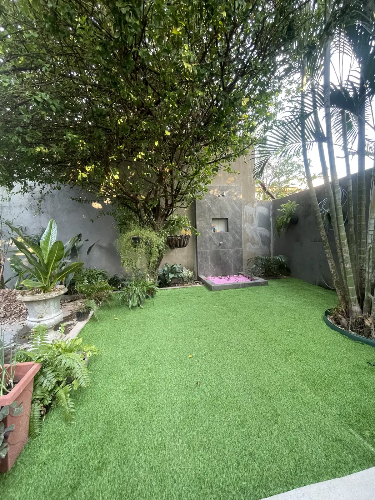
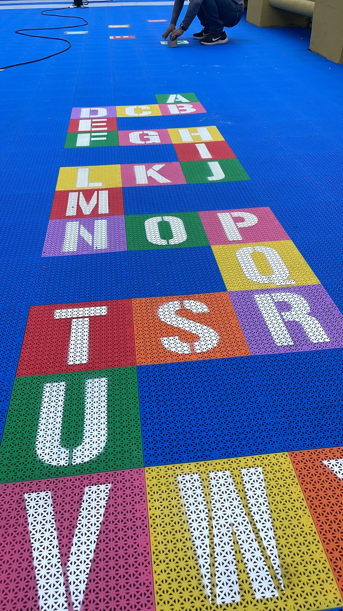

01
Planejar
Entendemos o espaço e o uso da quadra.
 Espaços reais. Novas possibilidades.
Espaços reais. Novas possibilidades.
Grama, pisos, tapetes e arenas. Encontre a solução para o seu espaço.

Quero transformar meu jardim
Quero escolher meu pisoUm lugar bonito muda o jeito de chegar, ficar e viver.
Beleza que você vê. Cuidado que sente no dia a dia.


Fotografias do acervo fornecido pela NOVE. Cada aplicação é definida conforme o ambiente e o uso pretendido.
Uma boa partida começa com uma quadra bem pensada.

Entendemos o espaço e o uso da quadra.
Organizamos base, estrutura e proteção.
Instalamos o gramado e finalizamos o campo.
O cuidado aparece em cada escolha.
Escutamos o que você precisa.
A conversa continua depois da entrega.
Investir com critério.
Conte o que você imagina. Em poucos passos, abrimos a conversa no WhatsApp.